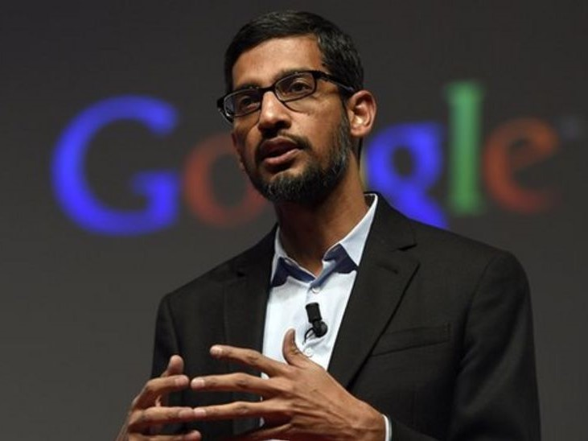

Pengertian Dan Sejarah Google Chrome
Google Chrome adalah peramban web (web browser) yang dikembangkan oleh Google. Peramban web adalah perangkat lunak yang memungkinkan pengguna untuk menjelajahi internet, melihat situs web, dan berinteraksi dengan berbagai konten online. Google Chrome dirilis pertama kali pada tahun 2008 untuk sistem operasi Windows, dan kemudian diadaptasi untuk sistem operasi macOS, Linux, iOS, dan Android.
Google Chrome dirancang dan dikembangkan oleh tim insinyur perangkat lunak di Google. Pemimpin proyek utama adalah dua orang pengembang perangkat lunak terkenal: Sundar Pichai dan Linus Upson.

1. Sundar Pichai:
Sundar Pichai adalah seorang insinyur komputer dan eksekutif bisnis India yang saat ini menjabat sebagai CEO Alphabet Inc., perusahaan induk dari Google. Dia bergabung dengan Google pada tahun 2004 dan menjadi salah satu arsitek utama di balik produk-produk kunci Google, termasuk Chrome. Sebelumnya, Pichai memimpin pengembangan produk Chrome dan Chrome OS.
2. Linus Upson:
Linus Upson adalah seorang insinyur perangkat lunak yang juga berkontribusi secara signifikan dalam pengembangan Google Chrome. Sebelum bekerja di Google, Upson memiliki latar belakang pengembangan perangkat lunak yang kaya dan membawa pengalaman berharga ke proyek Chrome.
----------------------------------------------------------------------------------------------------------------------------------------
Google Chrome pertama kali diumumkan pada bulan September 2008 dan versi beta publiknya dirilis pada tanggal 2 September 2008, untuk sistem operasi Microsoft Windows. Versi Mac OS X dan Linux kemudian diumumkan pada tahun 2009. Sejak saat itu, Chrome telah mengalami perkembangan pesat dengan serangkaian pembaruan dan peningkatan, termasuk peningkatan keamanan, peningkatan kinerja, dan pengenalan berbagai fitur baru.
Chrome segera mendapatkan popularitas karena kecepatan dan antarmuka pengguna yang sederhana. Dengan waktu, Chrome menjadi salah satu peramban web yang paling banyak digunakan di dunia dan menjadi pilihan utama bagi banyak pengguna internet. Google terus memperbarui dan mengembangkan Chrome melalui pembaruan reguler untuk memastikan bahwa pengguna mendapatkan pengalaman menjelajah web yang terbaik.
Fitur - Fitur Google Chrome
- Antarmuka Sederhana
- Kecepatan dalam memuat halaman web
- Keamanan
- Sinkronisasi data
- Ekosistem Ekstensi
- Pembaruan Otomatis
Kelebihan Google Chrome ---------------------- Kekurangan Google Chrome
- Memiliki nilai pengguna tinggi
- Fitur bawaan menarik
- Terhubung langsung dengan Google Search Engine
- Lebih hemat ram dan kecilnya ukuran memori
- Proses penterjemahan bahasa yang masih kurang baik
- Ada beberapa bugs yang bisa mengganggu pengalaman surfing internet
- Mengambil Data Pencarian Kita
- Keterbatasan Kustomisasi


Pengertian Web Browser (1)
Perbedaan Web Browser dan Search Engine (2)
Cara Kerja dan Kelebihan Kekurangan Web Browser dan Search Engine (3)